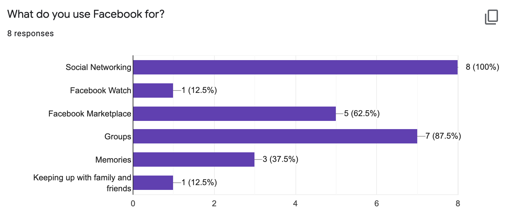
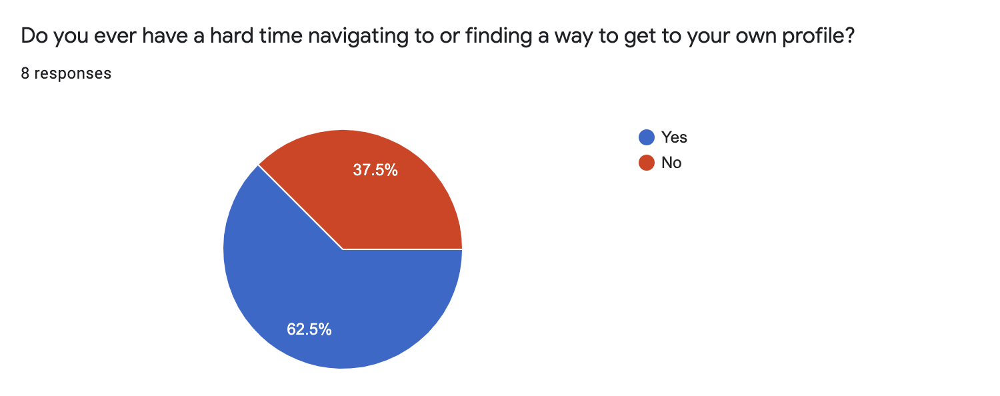
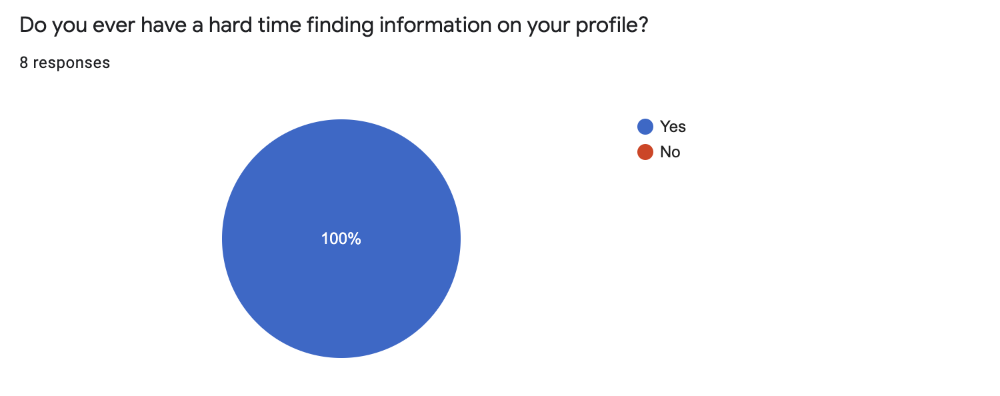
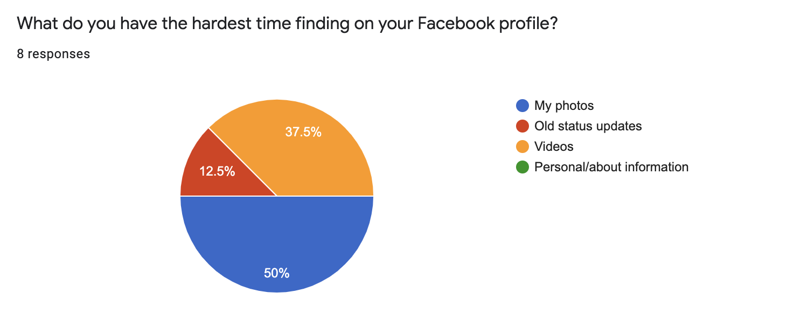
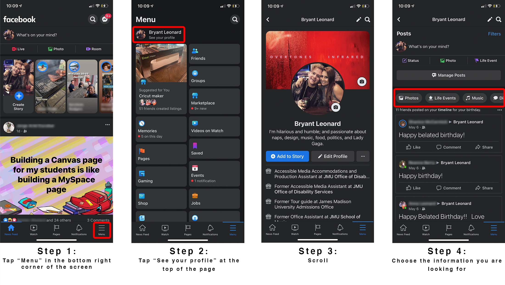
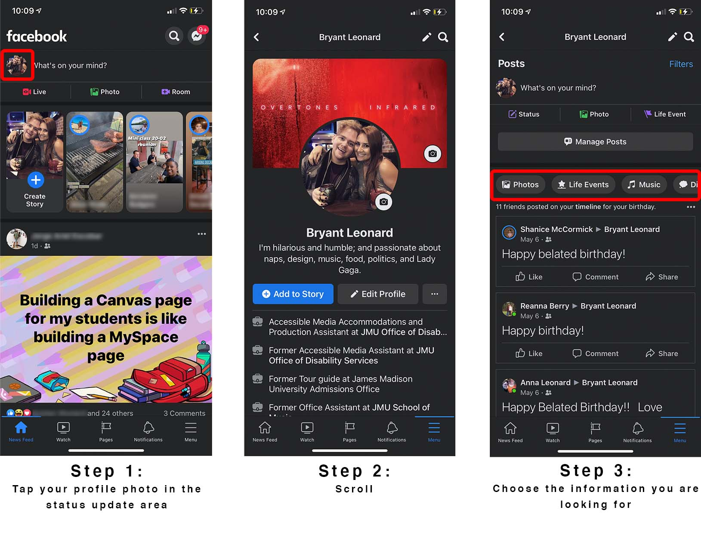

Bryant Leonard
September 6, 2021
Facebook is one of the most well-known companies in the world and is even synonymous with the word “internet” in some places. The world-domineering tech giant had humble beginnings as a social media network for college students. Slowly, new features were integrated, making Facebook a gaming platform, an online marketplace, and a video streaming service in addition to a social media network. But as these new features are added, the interface and usability of Facebook has become more complicated and cumbersome, especially for those looking to primarily use the site as social media.
So how can we improve the experience of Facebook users who use the site primarily for social media networking?
As someone who primarily uses Facebook as a way to keep in touch with friends and family and as a place to revisit memories, I’ve noticed it can be difficult to navigate to your user profile and find information there. For example, the link to your personal profile on Facebook is in the secondary navigation of the app, while links to Facebook Marketplace and Pages are in the main navigation.
You can also navigate to your profile by tapping your profile picture in the status update section, but I did not learn that until doing research for this project. I would have assumed by clicking anywhere in that field I would be prompted to create a status, not navigated away from the home page.
I conducted a short survey on eight Facebook users ranging in age from 18 to 29. Users were given a Google Form asking them various questions about their use of the Facebook mobile app.
All surveyed users agreed that they use Facebook for social networking purposes. Seven of eight users indicated they use Facebook for the groups feature. It appears that users overwhelmingly use Facebook in a social manner, and use it the least for watching of media (Facebook Watch).
A majority of users (62.5%) indicated that they have had a difficult time navigating to their personal profile page in the Facebook app.
All users indicated having some sort of issue with finding information on their own profile.
Four out of eight users reported having the most difficulty finding their photos, and three out of eight reported the same for videos. Facebook often groups photos and videos together, so that is seven out of eight users who report difficulty in finding their own media on Facebook.
Most users indicated having some sort of difficulty navigating to their own Facebook profile. Navigating to your own profile and accessing your own information on an application should be simple and intuitive.
Almost all users reported having issues finding their own media on Facebook. The button for photos is hidden below a lot of information, and videos are hidden even further behind the photos button.
I wanted to map out where users were having issues, so I created a couple of simple user flow guides to help me think through pain points.
User flow 1 accesses the user's personal profile through the secondary navigation menu.
User flow 2 accesses the user's personal profile through the profile photo in the status update area.
Before making high-fidelity redesigns of the Facebook user flows, I mapped out the changes I thought would best address users' issues with these wireframes.
I then created high-fidelity mockups of how I envision the solutions to users' needs.
To ease the users’ issues in navigating to their personal profile on Facebook, I added a “Profile” button to the main navigation at the bottom of the home screen. This will take users directly to their profile. I also moved the notification button to the top next to the Facebook Messenger for two reasons: to make room in the bottom navigation and to match the desktop version of the site.
I then addressed the other main pain point from my research by creating a new section on user profiles called “Photos & Videos”. It mimics and follows the “Friends” section. This gives users quicker access to the media on their profiles.
These small changes can have a big impact on users. Facebook is a large part of our current culture, and it should be easy for everybody to quickly find their own information and content.
{kind=link}
{kind=link}
{kind=link}